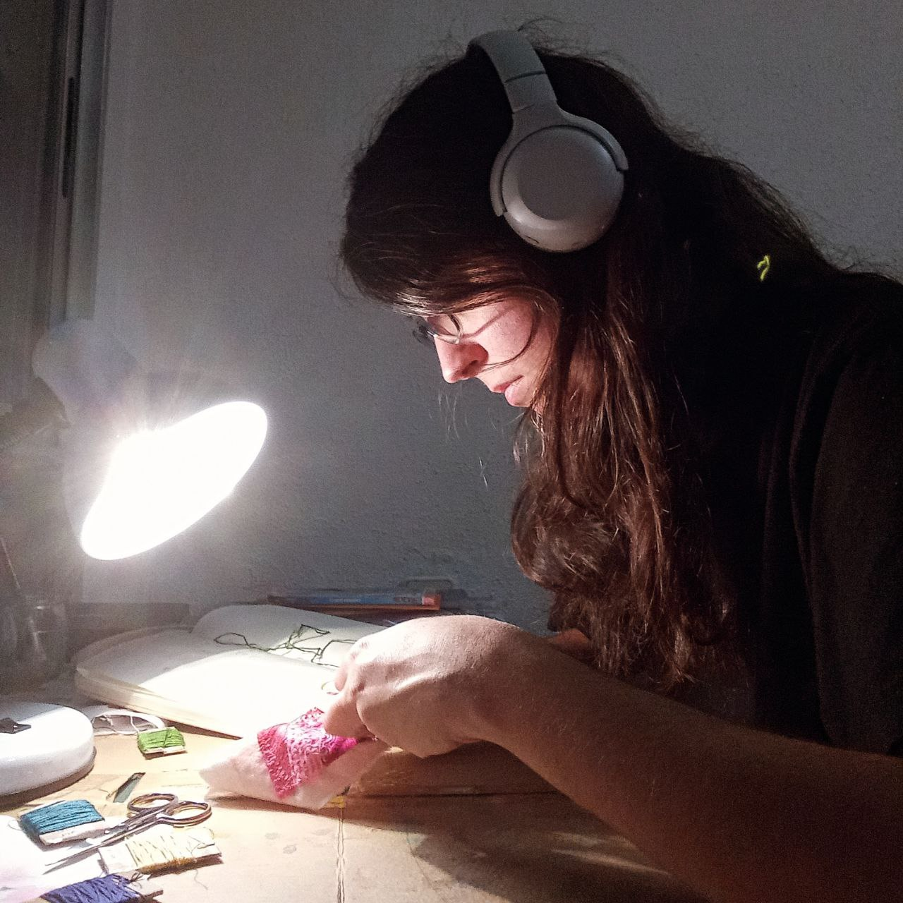

About me
 I'm a postdoc particle physics researcher interested in flavour physics and effective theories.
My work has been studying how particles that contain a bottom quark decay and how physics beyond the standard model could affect them.
In day-to-day life, that means doing analytic calculations both with Mathematica and by hand, phenomenological analysis of experimental results and coding numerical simulations.
Throughout my career, I have had the opportunity to present my work at several conferences and to meet many international colleagues.
I also did research stays of several months at the Instituto de Astrofísica de Canarias and at Southampton University.
I liked discovering new cultures and cities, even though I could not avoid missing home from time to time.>be>
I'm very aware of the problems in academia, especially in terms of diversity and inclusivity.
That's why I have always been involved in mentoring and promoting diversity in STEM.
I was part of the Equality and Diversity Committee of the IFIC and participated in the #MagnIFICa mentoring program.
I also think communicating science to the general public is very important.
I have always participated in the outreach activities of my institutions, and now I'm planning to learn more about science communication.
I'm a postdoc particle physics researcher interested in flavour physics and effective theories.
My work has been studying how particles that contain a bottom quark decay and how physics beyond the standard model could affect them.
In day-to-day life, that means doing analytic calculations both with Mathematica and by hand, phenomenological analysis of experimental results and coding numerical simulations.
Throughout my career, I have had the opportunity to present my work at several conferences and to meet many international colleagues.
I also did research stays of several months at the Instituto de Astrofísica de Canarias and at Southampton University.
I liked discovering new cultures and cities, even though I could not avoid missing home from time to time.>be>
I'm very aware of the problems in academia, especially in terms of diversity and inclusivity.
That's why I have always been involved in mentoring and promoting diversity in STEM.
I was part of the Equality and Diversity Committee of the IFIC and participated in the #MagnIFICa mentoring program.
I also think communicating science to the general public is very important.
I have always participated in the outreach activities of my institutions, and now I'm planning to learn more about science communication.

Music is not the only kind of art that interests me.
It's easy to find me reading, going to the theater and museums and learning about Catalan and Valencian traditional culture.
In fact, I was part of the traditional dance group A.C. La Carraspera and managed their socials for some time.
But now, my main interests are embroidery and textile arts.
I learned embroidery from my mom, and I now have an Instagram account (@puntdeneus) devoted to my work.
Eventually, I would like to combine it with my passion for science.